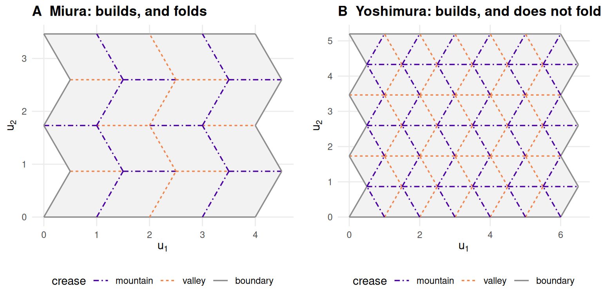
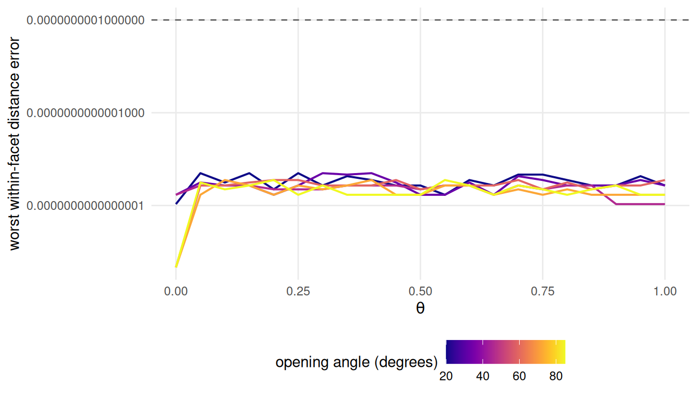
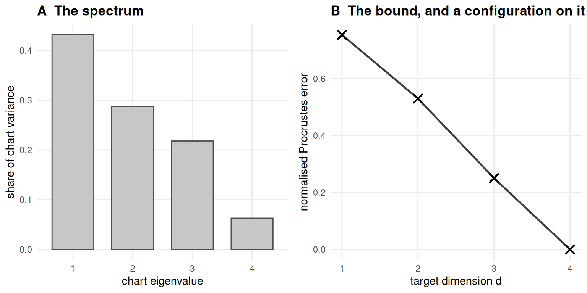

8 Building crease-pattern manifolds
How do you build a manifold whose true geometry you already know?
8.1 What this chapter answers
A benchmark for dimension reduction has to supply four things. Three of them are routine. Data: points in an ambient space that a method can be handed. A difficulty axis: some parameter that makes the same object harder without making it a different object. An answer key: the coordinates the method should have recovered. The Swiss roll and its relatives supply all three, and so does every folded sheet in this book.
The fourth is the one that is almost never supplied, and it is what this chapter builds. How much of the error was unavoidable? A method that scores an error of one half on a dataset has either thrown away most of the structure or reached the limit of what two dimensions can hold, and the score alone does not say which. Without that number a benchmark can rank methods against each other but cannot say whether any of them did well, and a ranking with no scale under it is how a survey ends up reporting that every method is mediocre on every dataset (4).
The number exists and is computable in closed form, but computing it needs a
manifold whose intrinsic dimension exceeds the target. That is this chapter’s
argument: the constructions in R/constructions.R exist to raise intrinsic
dimension while keeping the answer key exact, because a chart of dimension two
embedded into dimension two has an irreducible loss of exactly zero and nothing
to say.
The chapter also records what the benchmark does not contain. Two pattern families were specified for it and both were withdrawn on evidence, and they are reported here as results — what it takes for a pattern to qualify is worth more to a reader than a list of the ones that did.
8.2 Setup
grid <- read_run("data/processed/product-grid.rds", "bb8ade76d88b95a3")
fac_a <- miura_ori(4L, 4L, alpha = pi / 3)
fac_b <- miura_ori(3L, 5L, b = 1.4, alpha = pi / 4)grid is the product suite, 12960 rows produced by
scripts/run-product-grid.R; fac_a and fac_b are the two factors it is
built from. Everything else this chapter calls is in R/, sourced when the book
renders.
8.3 Background
8.3.1 Four objects, four verbs
The helper API is small on purpose. Three S3 classes carry everything between
files, each a plain list, and R/README.md states the contract field by field.
A crease_pattern is a flat, unfolded pattern: vertices in the plane,
facets as vertex-index cycles, and a crease table carrying a
mountain/valley/boundary assignment. Its vertices matrix is the ground truth —
not an approximation of the correct two-dimensional embedding, the embedding
itself.
A folded_pattern is the same pattern placed in \(\mathbb{R}^3\) at folding
parameter \(\theta\), with one dihedral angle per crease derived from the
placement rather than assumed.
A manifold_sample is \(n\) points drawn from a folded pattern: X in the
ambient space, truth in the chart, row-aligned. X[i, ] and truth[i, ] are
the same point seen two ways, and every measurement in this book compares an
embedding of the first against the second. The verbs run one line each.
p <- miura_ori(nx = 6L, ny = 6L, alpha = pi / 3)
s <- sample_manifold(p, theta = 0.6, n = 400L, seed = BENCH_SEEDS[1])
Y <- embed("isomap", s, d = EMBED_DIM, k = K_DEFAULT)
data.frame(vertices = nrow(p$vertices), creases = nrow(p$creases),
points = nrow(s$X), ambient = ncol(s$X), chart = ncol(s$truth),
error = round(reconstruction_error(Y, s$truth), 4))#> vertices creases points ambient chart error
#> 1 49 84 400 3 2 0.0551Four things about that call are load-bearing and easy to get wrong.
\(\theta\) is a parameter of the folding map, not an angle. It runs on
\([0, 1]\), zero being the flat sheet and one the flat-folded state, and fold()
refuses anything outside it; the dihedral angles are derived from it. Chapter
2 gives the derivation.
embed() takes the sample object, not a matrix. The registry holds
9 entries and
8
of them run: the autoencoder declares itself unavailable rather than failing at
fit time, and method_table() prints the registry with what each method
consumes.
Stochastic methods refuse to run unseeded. Standing rule 1 reports every
stochastic result across BENCH_SEEDS, and an unseeded fit cannot be one of
them, so embed() errors rather than quietly producing an anecdote.
Sampling trims the boundary by default. The chart is the geodesic only while
the straight chart segment between two points stays on the paper, and a Miura
unfolds to a region with a zigzag edge. boundary = FALSE is not tidiness — it
is the condition under which the answer key is the answer.
8.4 Constructions that keep the answer key
8.4.1 One pattern family, and two honest gaps
The book ships one family that folds. That is fewer than were specified, and the two that were withdrawn were withdrawn for different reasons, both of which are worth more than the families would have been.

Figure 8.1: Two valid flat crease patterns. Only the left one has a certified rigid folding; the right one is drawn here and never folded anywhere in this book. Mountain and valley are distinguished by colour and by line style together.
Figure 8.1 shows the Miura beside the Yoshimura. Both
panels are legitimate crease patterns. yoshimura() returns a crease_pattern
like any other, its facets are congruent, and its interior vertices satisfy
Kawasaki’s condition — the alternating sum of the sector angles vanishes — to
numerical noise. What it does not have is a folding.
yo <- yoshimura(6L, 6L)
kaw <- max(vapply(interior_vertices(yo), function(v) {
a <- sector_angles(yo, v)
abs(sum(a[c(TRUE, FALSE)]) - sum(a[c(FALSE, TRUE)]))
}, numeric(1)))
first_line <- function(e) sub("\\. See .*", ".", conditionMessage(e))
refusals <- c(
yoshimura = tryCatch(fold(yo, theta = 0.5), error = first_line),
waterbomb = tryCatch(waterbomb(), error = first_line))
cat(strwrap(refusals, width = 76, prefix = " ", initial = ""), sep = "\n")#> no rigid folding of the Yoshimura pattern is certified in which all three
#> crease families fold. Two were derived and each leaves one family flat,
#> which makes the folded object a parallelogram tessellation rather than a
#> diamond one -- a Miura in this pattern's clothing.
#> waterbomb() is not implemented: whether this tessellation admits a
#> one-parameter rigid folding is an open question in this project, not a
#> coding task.Kawasaki’s alternating sum is satisfied at all 25 interior vertices of that patch, worst departure 1.8e-15, and that buys nothing. Kawasaki is a necessary condition for flat-foldability at a vertex; it is not sufficient, and flat-foldability of a pattern is not the same question as the existence of a one-parameter rigid folding of a tessellation (11,14).
The Yoshimura. Two rigid foldings of the planar patch were derived,
implemented and verified in this repository. Each of them is exact — facet
isometry at the same order as the Miura’s, flat at \(\theta = 0\) — and each
leaves one of the three crease families entirely unfolded, at a dihedral angle
of \(\pi\) along its whole length. A folding that leaves a crease family flat is a
folding of a coarser pattern: fuse the facets across the creases that never
move, and what remains is a parallelogram tessellation. It is a Miura wearing
the Yoshimura’s crease lines. Shipping it as a second, independent family would
have been a claim about pattern variety that the geometry does not support, so
fold() refuses it and says why.
The waterbomb. waterbomb() stops before building anything. A degree-six
vertex with sectors of forty-five, forty-five and ninety degrees repeated
satisfies Kawasaki and is flat-foldable as an isolated vertex, which does not
imply that the tessellation admits a one-parameter rigid folding. Whether it
does is an open question in this project, not a coding task. A continuation
moved it only under an imposed symmetry, and three things disqualified that
result: the embedding is unproved, the fold amplitude is not monotone in
\(\theta\), and degrees of freedom remain on the free boundary, so \(\theta\) does
not determine the configuration.
Both withdrawals share one moral and it generalises well past origami. A test that a correct implementation passes is not the same as a test that a wrong one fails. An isometry check cannot tell a fold from a pleat, because a pleat is a rigid folding and passes perfectly. A first-order flex at the flat state proves nothing either: at \(\theta = 0\) every \(z\) column of the rigidity Jacobian vanishes, so the count of non-trivial infinitesimal flexes is \(V - 3 = 46\) for a pattern of this size and for any planar pattern whatsoever, foldable or not. Each trap here was sprung, and each was caught only by a second, independent check.
8.4.2 The isometry certificate
What a family has to produce, then, is a closed form, a fold that reaches every crease family, and an isometry that is exact rather than converged. The third is certified by measurement, not by the derivation that produced it.
alphas <- seq(MIURA_ALPHA_RANGE[1], MIURA_ALPHA_RANGE[2], length.out = 6L)
thetas <- seq(0, 1, by = 0.05)
cert <- do.call(rbind, lapply(alphas, function(al) {
q <- miura_ori(4L, 4L, alpha = al)
data.frame(alpha = round(al * 180 / pi), theta = thetas,
err = vapply(thetas, function(t) facet_isometry_error(q, t),
numeric(1)))
}))
worst <- max(cert$err)facet_isometry_error() compares all pairwise distances between a facet’s
vertices, folded against flat, and not merely its edges: a placement that
preserved every edge of a parallelogram while shearing it would pass an edge
test and would not be a rigid folding. Over the whole \(\theta\) sweep and the
full \(\alpha\) range the worst departure is
1.1e-15, against a contract of
1e-10. That is floating-point noise on a
closed form, not a tolerance anyone chose, and it is the certificate the product
construction below inherits.

Figure 8.2: Worst within-facet distance error across the folding sweep, at six opening angles spanning the range the contract asserts. The dashed line is the contract; every curve sits five orders of magnitude below it and shows no trend in either the folding parameter or the opening angle.
Figure 8.2 is that measurement across the sweep. The flatness matters as much as the level: an error growing with \(\theta\) would mean the closed form was an approximation that happened to be good near the flat state, which is what a derivation by facet rotation tends to produce.
8.4.3 Products: raising intrinsic dimension without losing truth
A folded sheet has intrinsic dimension two and every embedding in this book has target dimension two. That is a benchmark with no headroom, and the product construction supplies some.
product_manifold(a, b) takes two samples of the same size and pairs them
row-wise: the ambient coordinates concatenate to \(\mathbb{R}^{3+3}\), the charts
to \(\mathbb{R}^{2+2}\). Nothing is fitted and nothing approximated, for a reason
worth stating because everything downstream rests on it.
A product of isometries is an isometry. In a Riemannian product the squared distances add: for points \((u, v)\) and \((u', v')\), \(d^2 = d_1(u, u')^2 + d_2(v, v')^2\), and the same identity holds in the ambient product because concatenating coordinate blocks adds squared differences. Each factor map preserves its own term by construction, so the product map preserves the sum. The chart of the product is therefore the product of the charts, exactly, and its intrinsic dimension is the sum of the factors’ — \(2k\) in ambient \(3k\) for \(k\) sheets.
sa <- sample_manifold(fac_a, theta = 0.55, n = 400L, seed = BENCH_SEEDS[1])
sb <- sample_manifold(fac_b, theta = 0.60, n = 400L, seed = BENCH_SEEDS[1] + 500L)
pr <- product_manifold(sa, sb)
pythag <- max(abs(as.matrix(dist(pr$truth)) -
sqrt(as.matrix(dist(sa$truth))^2 + as.matrix(dist(sb$truth))^2)))
floors <- vapply(1:4, function(d) irreducible_loss(pr, d), numeric(1))
data.frame(ambient = ncol(pr$X), chart = ncol(pr$truth),
pythagoras = formatC(pythag, format = "e", digits = 1),
one_sheet_floor = irreducible_loss(sa, 2L))#> ambient chart pythagoras one_sheet_floor
#> 1 6 4 8.9e-16 0The Pythagorean identity holds to 8.9e-16 across all pairs, which is the numerical form of the argument above. The last entry is the sentence the whole construction exists to escape: a single folded sheet has a chart of dimension two, and the smallest error any two-dimensional embedding of it could achieve is 0. Exactly zero, in every cell, at every \(\theta\), under every noise model.
The bound. For an \(n \times p\) chart \(U\) and the normalised Procrustes error
of R/metrics.R — which optimises over translation, rotation, reflection and
isotropic scale (24,34) — every
\(n \times d\) configuration \(Z\) satisfies
\[\mathrm{err}(Z, U) \;\ge\; \mathrm{floor}(d) \;=\; \sqrt{\frac{\sum_{i > d}\lambda_i}{\sum_i \lambda_i}},\]
where the \(\lambda_i\) are the classical-MDS eigenvalues of the chart (22), equivalently the squared singular values of its centred coordinates. The proof is Eckart–Young (18) and it is short. As \(Z\) ranges over all configurations and the similarity group ranges over its elements, the fitted matrix ranges over exactly the centred \(n \times p\) matrices of rank at most \(d\); the best such matrix is the rank-\(d\) truncated singular value decomposition; its residual is the tail sum of squared singular values; normalising gives the expression above.
It is exact, it depends on the data alone, and no method appears anywhere in it.

Figure 8.3: The chart spectrum of one product cell, and the bound it produces. Panel A: the four eigenvalues of the four-dimensional chart, as shares of its variance. Panel B: the bound at each target dimension, as a line, with the rank-d projection of the chart drawn on top of it as crosses. The tail of A is the square of B.
Figure 8.3 shows why it is a bound rather than a guess: it is attained. The crosses in panel B are the chart projected onto its own top \(d\) principal directions, scored by the same function every method in the book is scored by. They sit on the line, to 6.1e-16. A minimum, not an infimum — which also makes clear what the bound is not. The minimiser is constructed from the answer key, so nothing that has not been given the answer can be expected to reach it.
The floor depends on the chart and on nothing else. That is the property that makes it useful rather than a limitation: it does not move with \(\theta\), with the noise model or with the sample’s difficulty, so “every method landed within a few per cent of the floor” is a statement about a regime rather than about a lucky draw.
8.4.4 Lifting to arbitrary ambient dimension
Real data does not arrive in three dimensions, and a method that only works when
the ambient dimension is small should be caught by that rather than flattered by
it. lift() maps a sample into \(\mathbb{R}^D\) through a random orthonormal
matrix.
lf <- lift(pr, D = 50L, seed = 20260901L)
dist_change <- max(abs(as.matrix(dist(lf$X)) - as.matrix(dist(pr$X))))
data.frame(ambient = ncol(lf$X),
dist_change = formatC(dist_change, format = "e", digits = 1),
floor_before = round(irreducible_loss(pr, 2L), 4),
floor_after = round(irreducible_loss(lf, 2L), 4))#> ambient dist_change floor_before floor_after
#> 1 50 1.8e-15 0.53 0.53Orthonormality is load-bearing and lift() asserts it rather than assuming it:
a merely random matrix would distort distances and invalidate the answer key
silently. Because \(Q^\top Q = I\) the map is exactly distance-preserving — the
worst change over all
79800 pairs is
1.8e-15 — and the
chart is untouched, so the floor is the same number before and after.
That decoupling is the point. Ambient dimension and intrinsic difficulty are two
axes, and a benchmark that moves them together cannot say which a method is
responding to. lift() moves the first alone.
8.5 Results
The product suite is 12960 rows: two arms, each swept over nine values of its own difficulty parameter, 20 seeds, four target dimensions and 9 registry entries at \(n = 400\).
The second arm is a concession turned into a finding. PROJECT_CONCEPT.md
listed crease-specificity among the book’s differentiators, and
product_manifold() imposes no family constraint: two isometric Swiss rolls
give intrinsic dimension four, an exact chart and a computable floor exactly as
two Miura sheets do. The differentiator as written is refuted, and reporting
both arms side by side is the stronger statement. What crease-specificity rests
on afterwards is zero reach (15,16) and an
answer key that is not smooth, not the bound.
8.5.1 The floor bites, and nothing goes under it
![Two panels sharing a vertical axis of normalised Procrustes error from zero to one. In each, a heavy grey line falls with target dimension one to four and the area beneath it is shaded. In the left panel, labelled crease product, three curves for ambient, geodesic and neighbourhood methods run just above the shaded region at dimensions one and two and separate from it at three and four. In the right panel, labelled roll product, the same three curves run flat near 0.95 across all four dimensions, far above a bound that falls quickly to near zero.](08-building-benchmarks_files/figure-html/bench-fig-dimension-1.png)
Figure 8.4: Achieved error against target dimension, by what each method consumes, with the irreducible-loss bound as the heavy line and the region below it shaded. Both arms have a four-dimensional chart, so the bound reaches zero at target dimension four. The shaded region is unreachable by any configuration whatsoever.
fits <- nrow(ok)
under <- sum(ok$excess < -1e-9)
crease2 <- ok[ok$d == 2L & ok$family == "crease", ]
roll2 <- ok[ok$d == 2L & ok$family == "roll", ]
by_con <- aggregate(excess ~ consumes, crease2, mean)Across all 11160 fits in the suite, the number that went under the floor is 0. That is a regression check and not evidence, and the distinction matters: the bound is proved, so a method that beat it would mean the implementation is wrong, not that the claim is. It is the assertion the producer exits non-zero on, and it should be read the way a failing test is read, not the way a corroborated conjecture is.
Figure 8.4 is what the bound buys. At target dimension two the crease arm’s floor is 0.517: the best configuration that exists still leaves a residual half the size of the chart’s own spread, before any method is chosen. Isomap’s raw error there averages 0.536, which against zero reads as failure and against the floor is an excess of 0.019 — it gives away 3.9 per cent of the range actually available to it. That contrast is this book’s thesis in one sentence. Read the first way the table says everything failed; read the second it says the loss belongs to the data.
Excess sorts by what a method consumes. On the crease arm at target dimension two the mean is 0.019 for the one geodesic method, 0.041 for the ambient ones and 0.113 for the neighbourhood ones. Isomap consumes exactly what a crease pattern supplies exactly (6), and it is the method closest to the bound. That ordering is measured over the whole sweep and all 20 seeds. The provisional version of it came from two values of \(\theta\) in a quick run that was never saved and put the ambient methods first — which is exactly the reading standing rule 2 exists to prevent.
8.5.2 Excess as a curve
![Two panels with independent axes. The left panel, crease product, plots excess over the floor against the folding parameter: three nearly flat curves for ambient, geodesic and neighbourhood methods sit between 0.01 and 0.10 until the folding parameter passes 0.8, where the ambient curve turns sharply upward and the geodesic one bends up more gently. The right panel, roll product, plots excess against the number of turns: three curves rise steadily together from about 0.72 to about 0.92 and stay within a hair of each other throughout.](08-building-benchmarks_files/figure-html/bench-fig-excess-1.png)
Figure 8.5: Mean excess over the floor at target dimension two, against each family’s own difficulty parameter — the folding parameter on the left, the number of turns on the right. The vertical scales differ between panels and the two arms are matched on nothing, so this is a statement about the construction and not about which family is harder.
Figure 8.5 is the whole sweep.
crease_curve <- aggregate(cbind(excess, floor) ~ par, crease2, mean)
roll_curve <- aggregate(cbind(excess, floor) ~ par, roll2, mean)Two things read off it. On the crease arm the floor is 0.517 at every one of the nine folding parameters — spread across the sweep exactly 0 — while the excess climbs from 0.062 to 0.146, almost all of it in the last two cells. The bound is a property of the answer key and folding does not touch it; the difficulty is entirely in the recovery. On the roll arm the floor does move, from 0.168 down to 0.068, because winding more turns lengthens the roll’s arc-length coordinate and elongates its chart. Two arms, two different relationships between difficulty and the bound, and neither is a defect.
8.5.3 Why a benchmark stuck at intrinsic dimension 2 is not a serious benchmark
Everything above is unavailable on the book’s main grid, and the reason is one
line of arithmetic. That grid’s chart is two-dimensional and its target is
two-dimensional, so the floor column in it is identically zero — as
irreducible_loss(sa, 2L) returned above, for the same reason, in closed form.
That is not a defect in the grid and it is worth one sentence rather than a footnote: on the main grid every error is loss the method is responsible for. It is the cleanest possible reading, and it is available precisely because the construction has no headroom in it.
But a benchmark that only ever has no headroom cannot ask the question this chapter opened with. It cannot distinguish a method that discarded structure from one that ran out of room, because there is never any room to run out of. It cannot show what Figure 8.4 shows — the crease arm’s methods hugging the bound at target dimensions one and two and pulling away from it at three and four, which says where each method’s loss comes from rather than how large it is. And it cannot report a result as a ratio, because a ratio needs both ends fixed and one end is nailed to zero.
The classical benchmarks are all in this position. A Swiss roll, an S-curve, a
severed sphere: two-dimensional charts, two-dimensional targets, floor zero
everywhere (12). Raising intrinsic dimension is the one move that
makes the bound bite, and doing it while keeping the answer key exact is what
product_manifold() is for. The product suite, not the main grid, carries the
argument.
8.6 Diagnostics
Do not read the two arms as a difficulty comparison. The crease arm is swept over the folding parameter and the roll arm over turns; the two are matched on nothing, and their floors differ by a factor of about 5 for reasons about how each chart is parameterised rather than about how hard each object is. What the pair supports is that the floor exists, is computable, is attained and is not beaten, in both families. A claim that one family is harder needs matched difficulty and does not live here.
Rows that did not run are results. Of the 12960 rows,
1440 are the autoencoder declaring itself
unavailable and 360 are t-SNE refusing target
dimension four — the Barnes–Hut implementation accepts one, two or three, and
the reason column says so. Both are recorded rather than dropped, because a
missing row and a refused row look identical in an aggregate and mean opposite
things.
The bound has no opinion about rank metrics. metric_floor() bounds the
normalised Procrustes error and nothing else. Trustworthiness, continuity and
\(Q_{NX}\) read rank order rather than distance, and an embedding sitting on this
floor may score better or worse on any of them than one well above it. That is
Chapter 9’s subject, not a defect here.
One stale message. waterbomb()’s error text still says the book ships two
families plus one negative result; it predates the Yoshimura’s withdrawal and
was never revised. The count in this chapter is the correct one — one family,
two negative results — and the discrepancy is left visible rather than quietly
patched, because it is exactly the kind of stale count a registry keyed by
family name is supposed to catch and did not.
8.7 Where it fails
A product is not a curved four-manifold. product_manifold() gives
intrinsic dimension four with an exact chart, and it gives it in the easiest
possible way: the factors are independent, their metrics do not interact, and
the chart’s four coordinates come in two decoupled pairs. Nothing here models a
manifold whose curvature entangles its directions. The construction is for the
bound, and the bound needs only a chart of dimension greater than the target.
The lift is linear. What makes it a clean axis is also its limit. A random
orthonormal lift adds no correlated nuisance structure, no heteroscedastic noise
and no nearly redundant coordinates — none of the pathologies that make real
high-dimensional data hard (1,2). A method
that survives lift() has been shown insensitive to ambient dimension alone.
The chart must be Euclidean. The bound is an Eckart–Young residual and
needs the doubly-centred squared-distance matrix to be positive semi-definite.
It is here, by construction. A distance matrix handed in from elsewhere may not
be, and chart_spectrum() refuses that case rather than reporting a tail sum
that bounds nothing.
The answer key is the chart only inside the paper. Chart distance equals geodesic distance only while the straight segment between two chart points stays on the sheet, and a Miura’s outline is not convex. The producer asserts a chart-exit fraction of zero on every cell rather than trusting the sampling default; where that assertion fails the answer key is wrong in the direction that flatters every method.
One family. A benchmark built on a single pattern family cannot support claims about pattern variety, and this book makes none. It can support claims about a construction, and the suite’s two arms are the evidence that the construction is what the claims are about.
8.8 Reproduce this
To add a family, write the constructor in R/patterns.R and the folding map in
R/folding.R, and let tests/testthat/test-folding.R decide whether it
qualifies: within-facet pairwise distances preserved to
1e-10 across the sweep, flatness at
\(\theta = 0\), an independent identity that was not built into the derivation,
and a mountain/valley assignment derived from the folded geometry rather than
asserted. A family that leaves a crease family flat fails the last of those,
which is how the Yoshimura was caught.
To build a product of your own, hand product_manifold() two manifold_sample
objects of equal size — they need not come from the same family, or from a
crease pattern at all — and score against irreducible_loss() rather than
against zero. against_floor() returns error, floor, excess and ratio together,
which is the form every result in Part III is reported in.
The suite itself is scripts/run-product-grid.R, which is run neither in CI nor
at render time: run it locally, commit the .rds, and let read_run() refuse
any chapter whose prose was written against a different one.
8.9 Further reading
Miura’s report (5) introduces the one family this benchmark folds, and Schenk and Guest (20) give the mechanics of folded shells. Hull (11) is the reference for what Kawasaki’s and Maekawa’s conditions do and do not guarantee, Demaine and O’Rourke (14) for rigid foldability as a computational question, and Lang (13) for the design side this chapter does not need.
On the measurement side, Eckart and Young (18) is the approximation theorem the bound instantiates, Schönemann (34) and Gower (24) fix the alignment group it is stated over, and Torgerson (22) is where the chart spectrum comes from. Balasubramanian and Schwartz (9) state the failure mode the folding parameter drives, and Lee and Verleysen (12) is the textbook treatment of the methods being measured. Espadoto and colleagues (4) survey the benchmarking practice this chapter argues with, and Machado and colleagues (3) make the case for evaluating the evaluators, which Chapter 9 takes up.